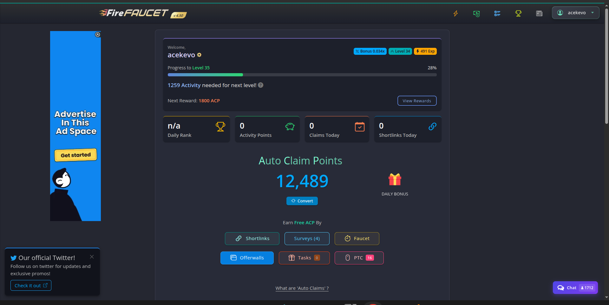
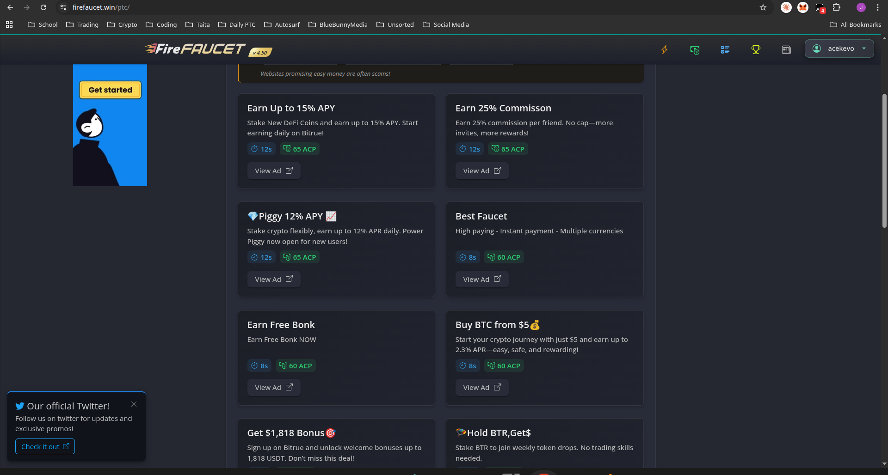
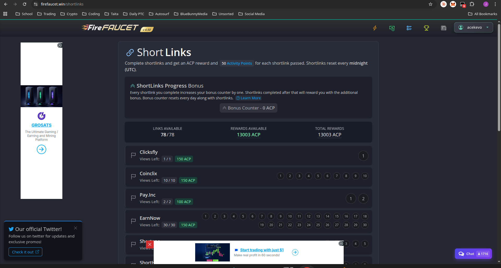

Quick Facts
What is FireFaucet?
FireFaucet has been operating for years and, unlike a lot of sites in this space, it's still running smoothly. That alone puts it ahead of half the competition. It's a multi-crypto earning platform — part auto faucet, part PTC, part shortlink site — and it delivers on all three without being a scam or a grind-to-nothing trap.
The site is clean. That sounds like a small thing until you've spent an hour on a faucet site that looks like it was designed in 2009 with pop-ups that cover half the screen. FireFaucet feels modern and intentional — tasks are easy to find, your balance is always visible, and navigation is straightforward.
But here's the honest summary before we go deeper: FireFaucet is consistent, which is its superpower. The tasks are always there. The platform almost never goes down. The auto faucet keeps ticking. If you're building a micro-earning stack and you want one site you can rely on every single day without thinking about it, this is a strong candidate.
The one thing that will frustrate you? The payout threshold is on the higher side. We'll get into that.
How FireFaucet Works
The Auto Faucet — The Real Draw
Everything on FireFaucet feeds into one system: Auto Claim Points (ACP). Every task you complete — shortlinks, PTC, offerwalls, surveys — earns ACP. You then spend ACP to fuel the auto faucet, which claims crypto on your behalf while you're away.
- Complete tasks to earn ACP
- Activate the auto faucet with your ACP balance
- It claims crypto automatically, even when you're offline
- Come back to a higher balance than you left
It's not magic passive income — you earn the fuel first — but the ratio is genuinely good. Spend 20 minutes doing shortlinks, set the auto faucet running overnight, wake up to compounded earnings. The dashboard keeps everything visible at a glance: your current ACP total, daily bonus status, and shortlink/faucet counters for the day.

PTC Ads — Low Per-Click, But Always Available
The PTC section runs a grid of ads — APY offers, exchange promotions, other faucets. Individual payouts per click are on the lower end compared to some competitors, but the supply never dries up. Plenty of PTC sites run empty mid-session; FireFaucet doesn't. If you have 15 minutes, there's always something to click.

Shortlinks — The ACP Workhorse
The shortlinks section is where serious earners spend their time. On a typical day you'll see 70–80+ links available across multiple providers (Clixfly, CoincIx, Pay.inc, EarnNow, and others), with ACP rewards in the 110–130 ACP range per link. Total daily ACP from shortlinks alone can exceed 13,000 ACP — that's a meaningful chunk of auto faucet fuel.
There's also a ShortLinks Progress Bonus — complete links in sequence and a bonus counter builds up, rewarding you with additional ACP for streaks. All shortlinks reset at midnight, so there's a fresh batch every day.

The catch: doing these manually is repetitive. The redirect chains are predictable (which is good), but clicking through 70 links by hand wears thin fast. This is where a macro makes a dramatic difference.
Automation Tip
FireFaucet's shortlinks follow a consistent structure across providers — which makes them ideal for browser macro automation. The links load reliably, the timing is predictable, and the ACP per run adds up fast. We're publishing a full walkthrough on automating your FireFaucet earnings soon — worth bookmarking if you want to run this hands-free.
Supported Coins
- Bitcoin (BTC)
- Litecoin (LTC)
- Dogecoin (DOGE)
- Tron (TRX)
- Dash, Zcash, Digibyte, and more
Good range. You can focus on one coin or spread across several — the ACP system is coin-agnostic.
Realistic Earnings
Let's be straight about this — no faucet site is going to replace your income. But FireFaucet is a dependable contributor to a wider micro-earning setup.
| Activity | Daily Time | Notes |
|---|---|---|
| Manual Faucet | 5–10 min | Solid base, straightforward |
| Auto Faucet | Passive (runs overnight) | Requires ACP to fuel it |
| PTC Ads | 15–30 min | Low per-click, but endless availability |
| Shortlinks | Varies (fast with a macro) | Best ACP-per-minute with automation |
| Surveys / Offerwalls | Varies | Decent when they work |
| Effort Level | Daily Time | Monthly Estimate |
|---|---|---|
| Casual (faucet only) | 10–15 min | ~$1–$3 |
| Regular (+ PTC + auto) | 30–45 min | ~$4–$7 |
| Optimised (macro shortlinks) | 20–30 min effective | ~$8–$15 |
The Payout Threshold Problem
This is the site's biggest weakness. The minimum payout is noticeably higher than what you'd find on platforms like FaucetCrypto. For casual earners, this means you'll be staring at your balance for a while before you see anything hit your wallet. It doesn't mean the site is a scam — payments do come through — but it does mean you need patience, and it will feel slow in the early days.
Pros and Cons
Pros
- Exceptional consistency — tasks always available, site rarely down
- Auto faucet runs passively while you're away
- Shortlinks work well, especially with a macro
- Clean, modern design — pleasant to use daily
- Good multi-coin support
- Reliable payment history
- PTC ads never dry up
- Active development — site gets updated
Cons
- Payout threshold is high — expect to wait
- PTC rewards are lower per-click than competitors
- Shortlinks are tedious without automation
- ACP grinding required to fuel auto faucet
- Survey disqualifications can be frustrating
The Auto Faucet — Worth Your Time?
Yes, and here's what it looks like in practice: a healthy day of shortlinks and PTC can push your ACP balance into the 10,000–15,000+ range. That ACP then runs the auto faucet for hours — meaning the work you put in at 8pm is still paying out at 2am while you're asleep.
The key is building an efficient ACP pipeline. Shortlinks are the best ACP-per-session source, especially with automation. PTC fills gaps. Once the pipeline is running, the auto faucet shifts from "occasional bonus" to "reliable daily earner."
We'll be covering exactly how to build this system — including the macro setup — in an upcoming guide. If you want to run FireFaucet mostly hands-free, that's the post to watch for.
Auto Faucet Quick Tips
- Run it overnight — it claims while you sleep
- Shortlinks give the best ACP efficiency; prioritise them over PTC
- Use the Progress Bonus to squeeze extra ACP out of each shortlink session
- Stack a full day's ACP before activating for longer uninterrupted runs
- Check your claim rate vs. coin — some coins yield better returns per ACP spent
The Shortlink Situation
Faucet shortlinks have a reputation problem, and most of the time it's deserved. Endless redirects, sketchy ad pages, timers that restart — it's a lot of friction for small rewards.
FireFaucet's shortlinks are better than average. They load reliably, follow a consistent structure, and the payouts are fair for the category. The problem is still the repetition — doing 20+ shortlinks manually is mind-numbing.
The fix: a browser macro. FireFaucet's shortlinks load consistently across providers (Clixfly, CoincIx, Pay.inc, EarnNow, and others), follow a predictable redirect pattern, and reset cleanly at midnight. That consistency is exactly what you want for automation — the macro doesn't get confused, the links don't randomly break. Full details coming in our FireFaucet automation guide.
Manual vs. Macro
Manual: do a session, move on, don't burn out — the ACP still adds up. With a macro running: 70+ shortlinks becomes a hands-free background task and shortlinks turn into your best ACP source on the site. The gap between the two approaches is significant enough to change how you feel about this site entirely.
How It Compares
| Feature | FireFaucet | FaucetCrypto |
|---|---|---|
| Consistency / Uptime | Excellent | Good |
| Auto/Passive Feature | Yes (auto faucet) | Level bonuses |
| Payout Threshold | High | Low |
| Shortlinks | Good (macro-friendly) | Average |
| PTC Rewards | Low but constant | Slightly better |
| Design / UX | Modern, clean | Clean, functional |
| Best For | Daily earners, automation | Quick withdrawals |
If fast payouts are your priority, FaucetCrypto edges it. If you want a reliable daily machine that rewards consistent use and automation, FireFaucet wins.
Who Should Use FireFaucet?
Good fit if:
- You're building a multi-site micro-earning rotation and need reliable daily tasks
- You're interested in automation or macros (this site rewards that approach)
- You don't mind waiting a bit longer for payouts in exchange for stability
- You want passive earning through the auto faucet
Less ideal if:
- You want to withdraw frequently or at low thresholds
- You're planning to do shortlinks manually (it will wear you down)
- You're starting out and want quick proof-of-payment first
Final Verdict
Score: 7.5 / 10 — Solid Pick
FireFaucet earns its place in any serious micro-earning rotation. The consistency is genuinely impressive — this site just keeps working, day after day, without drama. The auto faucet is a real feature, not a gimmick, and the shortlinks are some of the cleanest in the space once you've got a macro handling the legwork.
The payout threshold is the one thing that will genuinely frustrate you, especially early on. It's not a dealbreaker — payments do arrive — but you need to go in with realistic expectations about timing.
Bottom line: FireFaucet is a site you run every day and mostly forget about. That's a compliment. If you optimise it with automation, it punches well above its weight.
Related Reviews & Guides
- FaucetCrypto Review — Lower payout threshold, good alternative
- FaucetPay Review — Essential wallet for faucet withdrawals
- CoinPayU Review — Another solid PTC option
- Complete Faucets Guide — Full breakdown of the best faucets